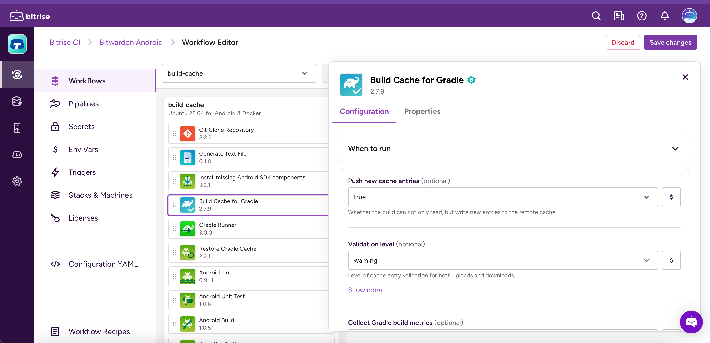
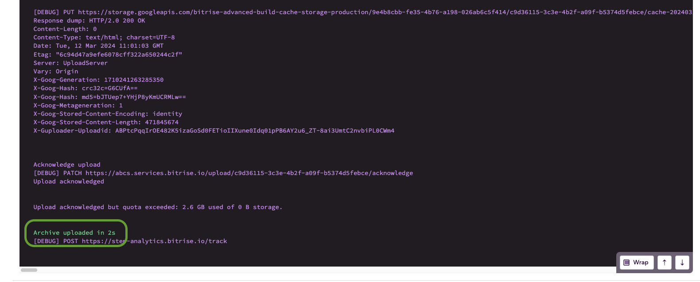
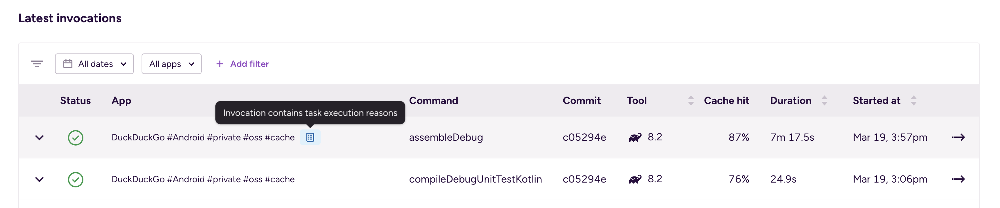
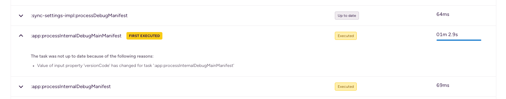

- Bitrise Build Cache
- Bitrise Build Cache for Gradle
Bitrise Build Cache for Gradle
The Bitrise remote build cache allows you to utilize the Gradle build cache for both local and CI builds. The solution caches Gradle task outputs on a remote server. When you run a build, Gradle will not execute tasks whose output is available in the remote cache and download the cache entry instead.
Try it for free
We offer a 30-day free trial at no cost; you don't even need to provide payment information. The trial starts automatically when you set up the Bitrise Build Cache.
Click here to get started with the Bitrise Build Cache. If you don't have a Bitrise account, you will be prompted to create one first before proceeding to set up the Build Cache.
The Gradle build cache helps you save time by reusing outputs produced by other builds. The Bitrise Build Cache allows you to utilize it for CI builds both on Bitrise and other CI environments.
Gradle builds are a series of tasks with inputs and outputs. Bitrise caches task outputs on a performant remote server. When you start a Gradle build, Gradle will skip executing tasks whose output is available in the remote cache and will instead download and reuse the cache entry.
Dependency caching vs build caching
Build caching and dependency caching are separate concepts. The best practice is to use both to minimize build times. Read more: Android dependencies.Android dependencies
Use key-based dependency caching
We recommend that you do not use the legacy dependency caching Steps in combination with remote build caching. Instead, combine build cache only with key-based dependency caching. This is to prevent unintended consequences that can happen when the legacy dependency cache carries build settings over between builds.Key-based caching
Configuring the Bitrise Build Cache for Gradle in the Bitrise CI environment
In the Bitrise CI environment, you only need our official Step to use the Bitrise Build Cache for your Gradle builds.
If you want to use the Bitrise Build Cache in your local builds, you need to first activate it in our CI environment.
Workflow Editor
bitrise.yml
-
Log in to Bitrise and select Bitrise CI on the left, then select your project.
-
Click the Workflows button on the main page.
-
Add the Build Cache for Gradle Step to your Workflow.
The Step should be before any Step that executes Gradle tasks, such as Gradle Runner or Android Build.

-
Open the
bitrise.ymlfile and add theactivate-build-cache-for-gradleStep to your Workflow.The Step should be before any Step that executes Gradle tasks, such as
gradle-runnerorandroid-build.your-workflow: steps: - git-clone@8: {} - activate-build-cache-for-gradle:
Configuring the Bitrise Build Cache for Gradle in non-Bitrise CI environments
The Bitrise Build Cache does not require using the Bitrise CI. You can use other CI/CD services and still take advantage of the cache to improve your Gradle build times.
To do so, you need to configure your CI environment to download the Bitrise Build Cache CLI during the build and then run the CLI to enable the Bitrise Build Cache.
-
Generate a Personal Access Token on Bitrise: Creating a personal access token.Creating a personal access token
Copy the value of the token, as you will need it during the process.
-
Find your Workspace ID: open the Workspace settings page and select General settings on the left navigation menu. You can find and copy the slug from there.Identifying Workspaces and projects with their slugs
-
Set the following Environment Variables in your CI configuration:
-
BITRISE_BUILD_CACHE_AUTH_TOKEN: The value should be your Personal Access Token. -
BITRISE_BUILD_CACHE_WORKSPACE_ID: The value should be the Bitrise Workspace slug.
-
-
Add the following script to your CI configuration before the step you want to speed up:
Environment
Make sure to run the script in the same environment as the Gradle command(s) you want to speed up. For example, if you use multiple Docker containers throughout the build, make sure that the Bitrise Build Cache CLI runs in the same Docker container as the Gradle command.
#!/usr/bin/env bash set -euxo pipefail # download Bitrise Build Cache CLI curl -sSfL 'https://raw.githubusercontent.com/bitrise-io/bitrise-build-cache-cli/main/install/installer.sh' | sh -s -- -b /tmp/bin -d # run the CLI to enable Bitrise build cache for Gradle /tmp/bin/bitrise-build-cache enable-for gradle
Gradle execution reason diagnostic builds
You can run Gradle diagnostic builds on Bitrise to find out the reasons behind Gradle task execution events. This helps reducing cache misses for remote caching.
Cache hit ratio is a measurement of how many content requests a cache is able to fill successfully, compared to how many requests it receives. Getting a high amount of cache misses slows down your build as it doesn't take full advantage of caching.
When running Gradle tasks, a change in task inputs usually lead to a cache miss. Gradle's execution reasons can help understand why the change in inputs happened, and to debug the problem.
You can keep on reading to understand the details of how Gradle tasks and their caching works.
To learn how to set up diagnostic builds on Bitrise, skip ahead to Diagnostic builds.
Gradle tasks and caching
In the Gradle build system, the basic unit of action is a task. A task could be compiling classes, running unit tests, or creating a JAR. Each task has its own inputs, such as files or environmental variables, and outputs.
Tasks usually generate their output in a specific build directory which is configurable for each module. The contents of this directory can be often reused between builds on the same machine. As such, Gradle saves time by executing only the tasks that can't be reused. For other tasks, the output from the build directory is
reused and the task gets the UP-TO-DATE label. This process is what Gradle calls an incremental build.
Incremental build vs incremental task execution
Incremental builds are not the same as incremental task execution! You can read about incremental tasks in Gradle's official docs.
Gradle tasks in a CI environment
When running Gradle in a CI environment, all tasks are either executed or retrieved from cache because the build directory is empty. After execution, Gradle saves metadata about the task inputs in the project cache directory. Gradle uses this metadata to be able to perfom incremental builds.
For example, in the case of a compile task, Gradle saves the checksum of the source files and only re-compiles files that have changed, based on the checksums. For more information on how Gradle checks task inputs, read Gradle’s docs on task inputs and outputs.
If metadata is not available, Gradle will execute all tasks.
Caching tasks
If the metadata indicates that a task has to be executed, and the Bitrise build cache is enabled, the task inputs and certain Gradle properties such as the version are hashed into the cache key. If either the remote or local cache has a match for the cache key, the task does not have to be fully executed: its execution
result is loaded from the cache and gets the FROM-CACHE outcome label.
If there is no match for the cache key in the remote or local cache (a cache miss), the task is fully executed and its outputs are stored in the cache.
When a task doesn't have the UP-TO-DATE label, the reasons for this are recorded and displayed in the task's row in the invocation details on Bitrise. Some of the possible reasons are as follows:
-
If the metadata is missing, No history available is displayed.
-
If the outputs are missing, Output... has been removed is displayed.
-
Tasks without the
UP-DO-DATElabel can still be cached if their inputs were cached at least once previously.
Diagnostic builds
To understand what changes contribute to a task’s execution, you’ll need the Gradle metadata and the build outputs from a previous build. Restoring them on a CI environment simulates a local incremental build, showing the changes between builds that contribute to cache misses.
These builds are called diagnostic builds on Bitrise.
Debugging purposes only
Diagnostic builds heavily use key-based caching and have increased build time. Their purpose is debugging and they shouldn't be a part of your daily workflows!Key-based caching
The archive limit for key-based cache is 15 Gb. If your app’s outputs exceed that, you can run two separate builds with the same principle, using your own artifact storage solution.
To set up and run a Gradle diagnostic build:
-
Create a CI configuration that:
-
Saves the build outputs and Gradle metadata with the Bitrise Build Cache CLI.
-
Restores the build outputs and metadata from cache.
-
-
Run an initial build to save the necessary directories in the key-based cache.
-
Run the diagnostic build to reveal Gradle execution reasons.
Creating the CI configuration for a diagnostic build
To create a CI configuration for a Gradle diagnostic build, your Bitrise Workflow will need two new Steps to save and restore build outputs, using the Bitrise Build Cache CLI.
Do not use key-based caching Steps
Diagnostic builds use key-based caching but for this purpose, do not use our dedicated key-based caching Steps. Set up Script Steps as they are described in this guide.
Workflow Editor
bitrise.yml
-
Create a new Workflow for the diagnostic build.
If you store your
bitrise.ymlfile in your repository, we recommend creating a new branch, too, and run the diagnostic build from that branch.Storing the bitrise.yml file in your repository -
Add the Build Cache for Gradle Step to the Workflow.
-
After the Step that runs your Gradle tasks (for example, Android Build), add a Script Step.
Environment
Make sure to run the script in the same environment as the Gradle command(s) you want to speed up. For example, if you use multiple Docker containers throughout the build, make sure that the Bitrise Build Cache CLI runs in the same Docker container as the Gradle command.
-
To the Script content input, add the following:
/tmp/bin/bitrise-build-cache save-gradle-output-data
This saves the Gradle metadata directory and the build outputs to the key-based cache under a cache key unique for your Workspace, app, and Workflow.
-
Before the Step that runs your Gradle tasks, add another Script Step.
-
To the Script content input, add the following:
/tmp/bin/bitrise-build-cache restore-gradle-output-data
This Step accesses the cache and restores your Gradle build data.
-
Create a new Workflow for the diagnostic build.
If you store your
bitrise.ymlfile in your repository, we recommend creating a new branch, too, and run the diagnostic build from that branch.Storing the bitrise.yml file in your repository -
Add the
activate-build-cache-for-gradleStep to your Workflow. -
After the Step that runs your Gradle tasks (for example,
android-build), add ascriptStep.Environment
Make sure to run the script in the same environment as the Gradle command(s) you want to speed up. For example, if you use multiple Docker containers throughout the build, make sure that the Bitrise Build Cache CLI runs in the same Docker container as the Gradle command.
-
To the
contentinput, add:- script: inputs: - content: |- /tmp/bin/bitrise-build-cache save-gradle-output-dataThis saves the Gradle metadata directory and the build outputs to the key-based cache under a cache key unique for your Workspace, app, and Workflow.
-
Before the Step that runs your Gradle tasks, add another
scriptStep. -
To the
contentinput, add/tmp/bin/bitrise-build-cache restore-gradle-output-data:- script: inputs: - content: |- /tmp/bin/bitrise-build-cache restore-gradle-output-dataThis Step accesses the cache and restores your Gradle build data.
Your configuration should look something like this:
- activate-build-cache-for-gradle:
- script:
inputs:
- content: |-
/tmp/bin/bitrise-build-cache restore-gradle-output-data
- gradle-runner:
inputs:
- gradle_options: "--stacktrace --stacktrace"
- gradlew_path: "./gradlew"
- gradle_task: assembleDebug
- script:
inputs:
- content: |-
/tmp/bin/bitrise-build-cache save-gradle-output-data
Saving the directories in the key-based cache
When setting up a Gradle diagnostic build for the first time, you need to run an initial build with the created configuration to save the necessary directories in the key-based cache. This initial build will not show any execution reason in the invocation details.
-
Once the CI configuration is complete, run a build.
-
Check the logs to make sure the uploads have been successfully completed.

Running and checking a diagnostic build
After the CI configuration is complete and an initial build has successfully uploaded the necessary directories to the key-based cache, you can run a diagnostic build to reveal execution reasons for Gradle tasks. Make sure you use the same Workflow and branch as the initial build
With a diagnostic build, Gradle will behave as if it was an incremental local build.
-
Run the build.
-
Open the Build Cache page.
-
Among the Latest invocations, find the tasks you need. A blue icon will show you the tasks that contain task execution reasons:
You will see changes related to your CI configuration that frequently cause cache task input changes and cache misses.

To successfully interpret and debug these reasons, you can check out the relevant Gradle documentation or delve into our debugging tips.
Gradle configuration cache
Gradle configuration cache reduces build times by caching the result of a Gradle project's configuration phase and reusing it in subsequent builds. For details, read Gradle's official documentation. The Bitrise Build Cache supports this feature for Gradle 8.6 and later versions.
Gradle configuration cache reduces build times by caching the result of a Gradle project's configuration phase and reusing it in subsequent builds. For details, read Gradle's official documentation. The Bitrise Build Cache supports this feature for Gradle 8.6 and later versions.
Setting up the configuration cache
To set up the configuration cache:
-
Make sure you have a subscription or a trial for the Bitrise Build Cache.
-
Run a build locally with the
--configuration-cacheflag.This ensures that your Gradle project supports configuration caching. To enable configuration caching in the Gradle settings, refer to Gradle's official guide.
-
Generate a Bitrise personal access token and add it as a Secret with the
BITRISE_BUILD_CACHE_AUTH_TOKENkey.Creating a personal access tokenSecretsToken consistency
For the configuration cache to function correctly, the authentication token used by the Gradle plugins must remain consistent across builds.
-
Generate a Gradle encryption key:
openssl rand -base64 16
-
Save the key as a Secret named
GRADLE_ENCRYPTION_KEYin your Bitrise project.SecretsThis ensures that the encrypted value of the configuration cache remains the same across different builds. Using a fixed encryption key is supported from Gradle version 8.6 or later. Bitrise doesn't support Gradle configuration cache for earlier Gradle versions.
-
Set your Bitrise workspace slug as an Environment Variable named
BITRISE_BUILD_CACHE_WORKSPACE_ID.Identifying Workspaces and projects with their slugs -
Add the Build Cache for Gradle Step to your Workflow.
The Step must be of version 2.7.7 or later. Any subsequent updates to the Step will cause a one-off invalidation of the configuration cache. If this happens, do a rebuild to fix the issue.
-
Add the Restore Gradle configuration cache and the Restore Gradle Cache Steps before your Gradle invocation in the Workflow.
The Steps retrieve cached configuration data and enable the configuration cache to access artifacts it references.
Configuration cache directory
The Restore Gradle configuration cache Step saves data in the
./.gradle/configuration-cachedirectory. You can override this by changing the Configuration cache directory input.For example, if you use Android Build to build your Gradle project, these two Steps must come before it in the Workflow.
-
Add the Save Gradle configuration cache and the Save Gradle Cache Steps after your Gradle invocation in the Workflow.
The Steps save the configuration data to the cache and save artifacts referenced by the configuration cache.
-
Enable the Save transforms input of the Save Gradle Cache Step. You need Step version 1.4.1 or later.
Saving the Gradle configuration cache log
Gradle's build logs might contain information about why it didn't reuse the configuration cache. You can save the log to the Artifacts page of your build:
-
Enable the
--infolog level in Gradle. -
Add the Deploy to Bitrise.io Step to your Workflow.
-
Set the Deploy directory or file path input to what Gradle outputs as the file path.
You can check the deployed file on the Artifacts page: open Bitrise CI, select your project and then the build, and select the Artifacts tab.
Troubleshooting the configuration cache
If your build doesn't reuse the configuration cache, you can check a number of potential problems.
General troubleshooting
-
Make sure to add the Save/Restore Gradle cache Steps to utilize dependency caching. Gradle configuration cache references artifacts that must be present.
-
It may take multiple runs before the configuration cache is fully applied and reused.
-
Check the Gradle logs to find out why Gradle didn't reuse the configuration cache. You can save the gradle configuration cache log to your build artifacts.
-
Updates to the Build Cache for Gradle Step will cause a one-off invalidation of the configuration cache. Just run another build to fix the problem.
Failed to instrument class error
Your build could fail with the following error:
org.gradle.internal.operations.BuildOperationInvocationException: Failed to instrument class io/bitrise/gradle/cache/BitriseBuildCache in ClassLoaderScopeIdentifier.Id{coreAndPlugins:init-file:/root/.gradle/init.d/bitrise-build-cache.init.gradle.kts(export)}
To fix this issue:
-
In the Save Gradle cache Step, set the Save transforms input to true.
Version requirement
The input is only available from version 1.4.1 or later.
-
Force a save by running a build without the Restore Gradle cache Step.
Gradle dependency verification
Gradle dependency verification requires every plugin and dependency be listed in the Gradle project's verification metadata XML file. If any plugins or dependencies aren't listed, Gradle will exit with an error listing the relevant plugins and dependencies.
The Bitrise Build Cache uses two custom Gradle plugins:
-
The Bitrise Build Cache Gradle plugin implements Gradle's build cache interface.
-
The Bitrise Gradle Analytics Gradle plugin implements a build event listener.
The Build Cache for Gradle Step generates the necessary Gradle .init file which specifies these two plugins and the necessary initialization configuration. When this file exists in Gradle's .init.d directory, Gradle will
automatically use the specified configuration. This conflicts with the dependency verification feature, as these plugins aren't listed in the metadata XML file.
Configuring the Build Cache with dependency verification
To be able to use the Bitrise Build Cache for Gradle with dependency verification, you need to:
-
List the Bitrise plugins and their dependencies in the project's
verification-metadata.xmlfile. -
Lock the Build Cache for Gradle Step to the latest patch version. Locking the Step to a specific version prevents automatic updates so the builds will always use the same version of the Step. For more information, check out Using a specific Step version.Using a specific Step version
To do so:
-
Open the dependency matrix and look up the latest version of the Build Cache for Gradle Step.
-
In the configuration YAML file of your project, lock the Step to the latest patch version:Configuration YAML
Updating the metadata
Every time you change the locked version of the Step, you need to update the
verification-metada.xmlfile!- activate-build-cache-for-gradle@2.7.14: inputs: - verbose: 'true' -
Go back to the dependency matrix and find the CLI version corresponding to the Step version you locked in.
-
Click the link on the CLI version number to go to the CLI release page.
-
Find the
verification-metadata.xmlfile and download it. -
Add the content of the components element from the downloaded file to your
$PROJECT_ROOT/gradle/verification-metadata.xmlfile.Note
We've collected the dependencies for the plugins with a simple Gradle project and a specific project platform runtime version. In your setup, Gradle might pull slightly different dependencies. In that case, you need to generate the dependency metadata yourself: Generating and updating the verification metadata.
-
Review and commit your changes.
Generating and updating the verification metadata
You might need to generate the dependency metadata yourself if:
-
You update the Build Cache for Gradle Step to a new version.
-
The collected metadata in the metadata XML file differs from what Gradle expects in your environment.
-
Lock the Build Cache for Gradle Step to the latest version in your configuration YAML file.
-
Open the dependency matrix and find the CLI version corresponding to the Step version you locked in.
On your development machine or on Bitrise in a separate (non-production) Workflow, install that version of the CLI: replace
CLIVERSIONin the below curl command with the version you want to install, for example,v0.15.9.curl --retry 5 -sSfL 'https://raw.githubusercontent.com/bitrise-io/bitrise-build-cache-cli/main/install/installer.sh' | sh -s -- -b /tmp/bin -d "CLIVERSION"
-
Back up
$HOME/.gradle/init.d/bitrise-build-cache.init.gradle.ktsas the next step in the process will overwrite it. -
Run the Bitrise CLI's
gradle-verification add-reference-depscommand:/tmp/bin/bitrise-build-cache gradle-verification add-reference-deps
-
In your Gradle project folder, write the verification metadata. For example:
./gradlew tasks --write-verification-metadata sha256
-
Review the metadata differences and then commit and migrate your changes to your production Workflow.
-
If you backed up
$HOME/.gradle/init.d/bitrise-build-cache.init.gradle.kts, you can revert the changes.